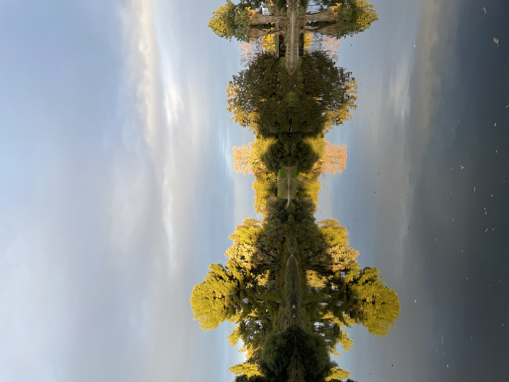
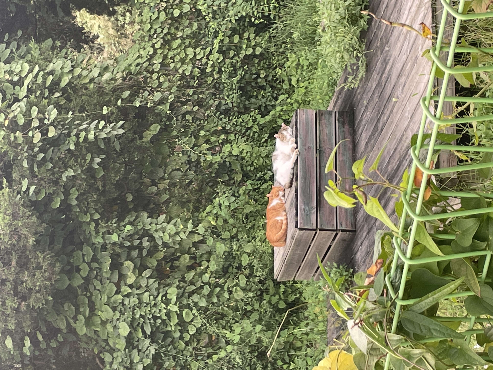

Favorites Memories
8 items





8 items
June 12, 2021 11:43 AM
This photo captures my cat, Backey, peacefully napping under the warm sunlight streaming through the window. The way the light gently wraps around him makes the moment feel even more special—simple, yet full of warmth. Watching Backey rest so contentedly reminds me to slow down and appreciate these quiet, everyday joys. It’s in these fleeting moments that I feel truly at peace, grateful for the soft, ordinary beauty that fills my life.
Saturday | Jun 12, 2021 | 11:43 AM
Apple iphone 12 mini
June 5, 2021 6:10 PM
This image captures a table of freshly harvested vegetables set against the backdrop of a quiet village garden— a scene I stumbled upon while descending from a hike. Each vegetable is carefully wrapped and labeled with its name and price, and at the edge of the table, a handwritten note lists account numbers alongside messages of gratitude. What struck me most about this moment was the quiet warmth it carried—the trust, simplicity, and sense of community woven into this unmanned system of sharing fresh produce. It’s a small yet beautiful reminder of generosity and the unspoken connections that make everyday life meaningful.
Friday | Jun 5, 2021 | 6:10 PM
Apple iphone 12 mini
July 13, 2024 7:13 PM
This photo was a very meaningful gift from someone special to me on my birthday. Every time I look at this image of the flower, the memories of that day come rushing back with vivid clarity. The petals, painted in my favorite colors, felt like a reflection of my emotions—filling my heart with warmth and joy. It’s a simple yet deeply meaningful reminder of kindness, thoughtfulness, and the beauty of feeling seen and appreciated.
Saturday | July 13, 2024 | 7:13 PM
Apple iphone 12 mini
March 27, 2023 6:39 PM
This photo was taken as I watched the sunset over the sea—one of my favorite sights. After a peaceful picnic with my friend, we captured moments of each other against the golden sky, soaking in the beauty around us. There’s something about nature’s quiet magnificence that fills me with inspiration and energy. This moment, bathed in warm light, reminds me to appreciate the simple yet profound joy of being present with the people and places I love.
Monday | Mar 27, 2023 | 6:39 PM
Apple iphone 12 mini
December 16, 2024 5:09 PM
This photo captures a breathtaking sunset I witnessed after visiting The Getty Villa. The sky unfolded like a masterpiece, reflecting the beauty of the paintings inside the museum. The colors were so vivid and moving, as if nature itself had painted a living work of art just for that moment. My friend and I instinctively reached for our phones, eager to preserve its fleeting brilliance. Looking back at this image, I’m reminded of how art isn’t just confined to galleries—it exists all around us, in the quiet, unexpected moments that make life feel extraordinary.
Sunday | Dec 16, 2024 | 5:09 PM
Apple iphone 12 mini
December 1, 2023 4:18 PM
This photo was taken at the school Arboretum, where a serene lake reflected the world around it in perfect symmetry. The way the light danced on the water made the scene feel almost otherworldly—so beautiful that I couldn’t help but capture it. As I walked with my friend and her dog, I found myself fully immersed in the quiet joy of the moment. This photo reminds me that nature has a way of transforming ordinary walks into something extraordinary, filling even the simplest moments with beauty and gratitude.
Friday | Dec 1, 2023 | 4:18 PM
Apple iphone 12 mini
June 12, 2021 11:43 AM
June 12, 2021 11:43 AM
This photo captures street cats peacefully napping near my home in Korea. On my way back, I couldn’t help but pause and watch them, curled up so sweetly, undisturbed by the world around them. There was something incredibly heartwarming about their quiet rest—a small, simple moment of comfort and tranquility. Seeing them so carefree filled me with a gentle joy, reminding me to cherish these unnoticed yet meaningful moments of warmth in everyday life.
Saturday | Jun 12, 2021 | 11:43 AM
Apple iphone 12 mini
June 19, 2021 11:19 AM
This photo was taken during my stay on Jeju Island in South Korea, my favorite destination. The place I stayed was called "Flower House," and true to its name, it was surrounded by a vibrant array of flowers and trees. Walking through this beautiful setting filled me with joy—the colorful blooms and lush greenery were a feast for the eyes. Seeing these charming flower houses nestled in nature made the experience even more special, reminding me to appreciate the simple beauty that surrounds me.
Monday | Jun 19, 2021 | 11:19 AM
Apple iphone 12 mini